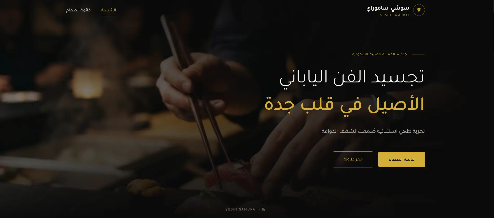
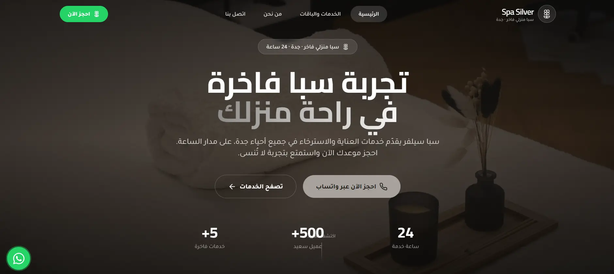
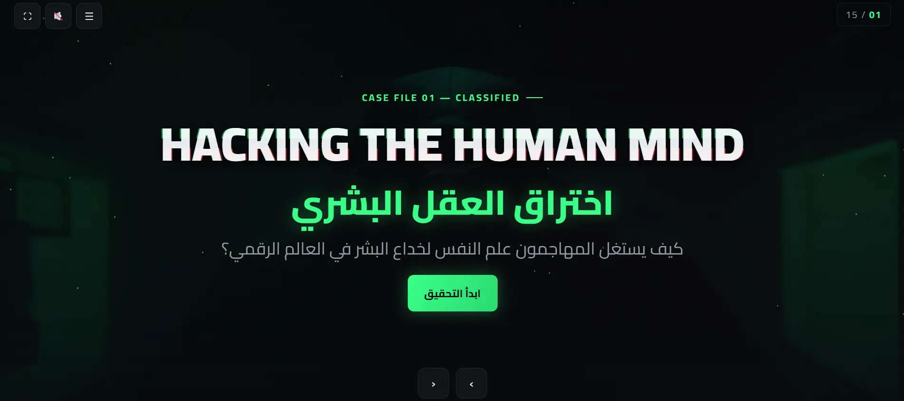

تصميم مركّز على المستخدم
واجهات واضحة وسهلة الاستخدام، بألوان هادئة وتخطيط منظّم.
متخصصة في علوم الحاسب والأمن السيبراني ومطوّرة واجهات ويب عصرية
أُحوّل الأفكار إلى تجارب رقمية آمنة وجميلة؛ تصاميم أنيقة، أداء سريع، وواجهات متجاوبة تُبنى بمعايير حديثة ووعيٍ أمني متين.
حسابيةٌ بالتكوين وفنّيّةٌ بالذوق؛ أجمع في مشروعي بين علوم الحاسب والأمن السيبراني وتطوير الواجهات، لأقدّم مواقع موثوقة، سريعة، ومريحة الاستخدام على جميع الشاشات.
واجهات واضحة وسهلة الاستخدام، بألوان هادئة وتخطيط منظّم.
فهمٌ عميق لأساليب الاختراق والهندسة الاجتماعية وطرق الحماية منها.
مواقع سريعة ومتوافقة مع مختلف أحجام الشاشات والمتصفحات.
نماذج من الأعمال في تطوير الويب وتصميم التجارب الرقمية.

موقع قائمة طعام إلكترونية بتصميم تفاعلي وعصري، يعرض الأطباق بصورة شهية مع تجربة تصفّح سلسة على الجوال والحاسوب.
زيارة المعاينة ↗
موقع متكامل متعدد الصفحات لعرض خدمات السبا والحجوزات، بهوية بصرية هادئة وأقسام منظّمة لخدمات العملاء وحجز المواعيد.
زيارة المعاينة ↗
واجهة تفاعلية بجودة عالية، صُمّمت بعناية لضمان سرعة الأداء وسلاسة الحركة، مع تجربة مستخدم مريحة تُشعر بالانسيابية في كل نقرة.
زيارة المعاينة ↗مجالات العمل اليومي لتحويل الأفكار إلى منتجات رقمية متكاملة.
واجهات عصرية أنيقة بألوان متناسقة وتجربة استخدام مريحة.
مواقع متجاوبة وسريعة تُبنى باستخدام HTML وCSS بأساليب حديثة.
فهم التهديدات الشبكية والهندسة الاجتماعية وأساليب حماية البيانات.
توظيف أدوات الذكاء الاصطناعي لتسريع البناء وتطوير الواجهات.
فكرة مشروع أو فرصة تعاون؟ يسعدني استقبال الرسائل عبر البريد الإلكتروني.